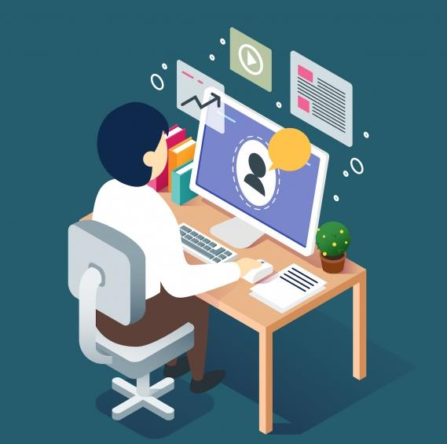

Reduce learning and development costs
Cut down training/onboarding time for employees, customers, and partners
Accommodate multiple learning audiences
Centralize e-learning resources
Easy adaptation and re-use of learning materials over time
Maintain compliance
Track learner progress
Onboard partners and resellers to improve their ability to sell
Retain customers by ensuring they use their products and services effectively
Measure how learning impacts organizational performance
More choices for curriculum creators (i.e., methods of delivery, design of materials, evaluation techniques)
Economies of scale that make it cost efficient for organizations to develop and maintain learning content (instead of relying on third party providers)
Increase knowledge retention
Stay on top of required training
Engage with formal and informal learning best practices
Acquire skills and knowledge required for career advancement
Improve performance
Address:
No 2, Jang Gwom St. Opp UEC
Behind Gada Biu Police Outstation,
Jos Plateau State.
Phone: 08165321429